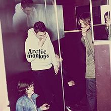

|  | Pretty Visitors | |
|---|---|---|
|
[Verse 1]
Trudging through the morning The tramp with the trampoline under his arm Shifts past your whiskers, so stark is the charm But the barking alarm waits coiled 'til the corner is turned And the bicycle wheels all struggle to move 'round In your muddy mind, blatantly caked and Unwilling to wind uncooperative time So he sits on the springs 'til the muck goes dry [Chorus] All the pretty visitors came and waved their arms And cast the shadow of a snake pit on the wall All the pretty visitors came and waved their arms And cast the shadow of a snake pit on the [Verse 2] What came first, the chicken or the dickhead? Split sleep reaps rewards from ill fitting thoughts And twilight forced you to go on a walk Your legs start running and your head gets caught Canopy 19 is perfectly placed For the reasonably frightening fall from the aftertaste You'll have to slip away, I am unhappy to say Behold as the crook in the hammock plays [Chorus] All the pretty visitors came and waved their arms And cast the shadow of a snake pit on the wall All the pretty visitors came and waved their arms And cast the shadow of a snake pit on the wall [Verse 3] Behold there's a crook in the hammock plays Cruelly with the base and the scales And fiddles with the feet on a balancing act Gagged, bound and crafting a tale Trailing wrapped in a gasp Cruelly with the base and the scales And fucking fiddles with the feet on a balancing act She was gagged, bound and crafting a tale Trailing wrapped in a gasp [Chorus] All the pretty visitors came and waved their arms And cast the shadow of a snake pit on the wall All the pretty visitors came and waved their arms And cast the shadow of a snake pit on the wall |